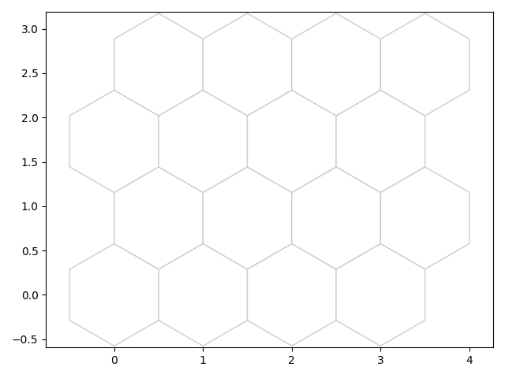
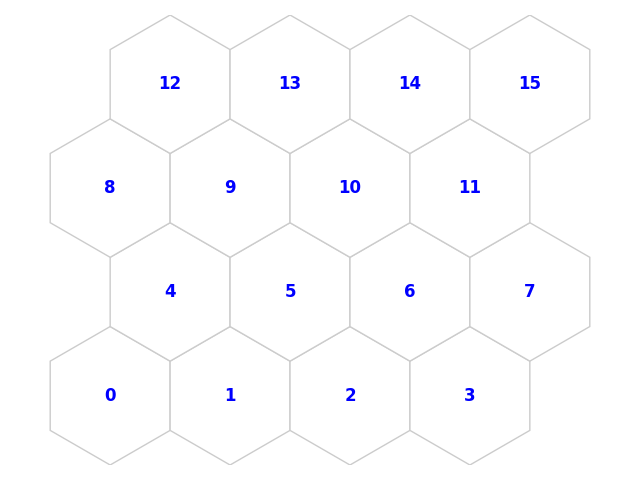
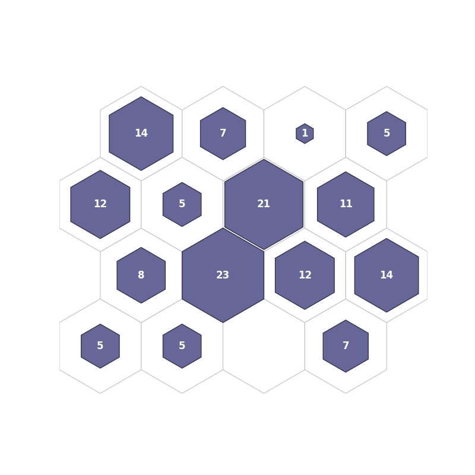
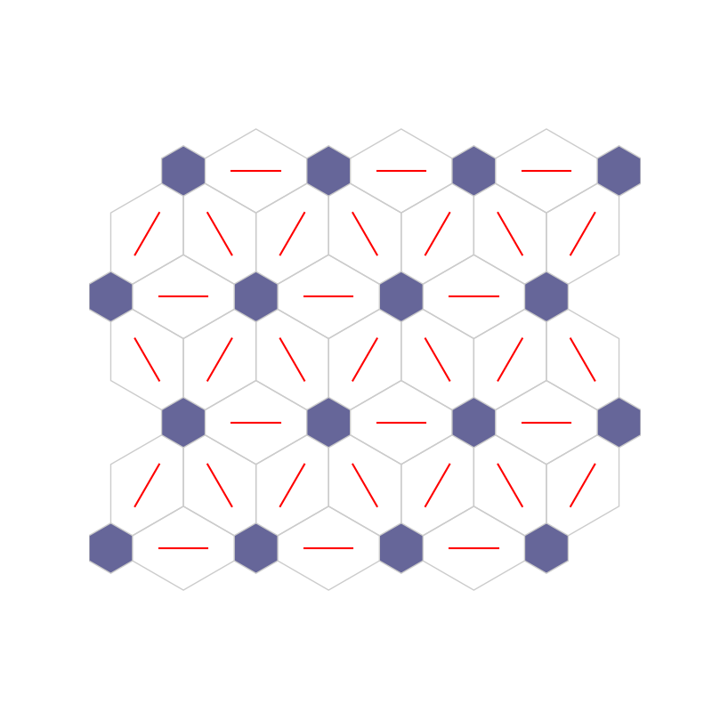
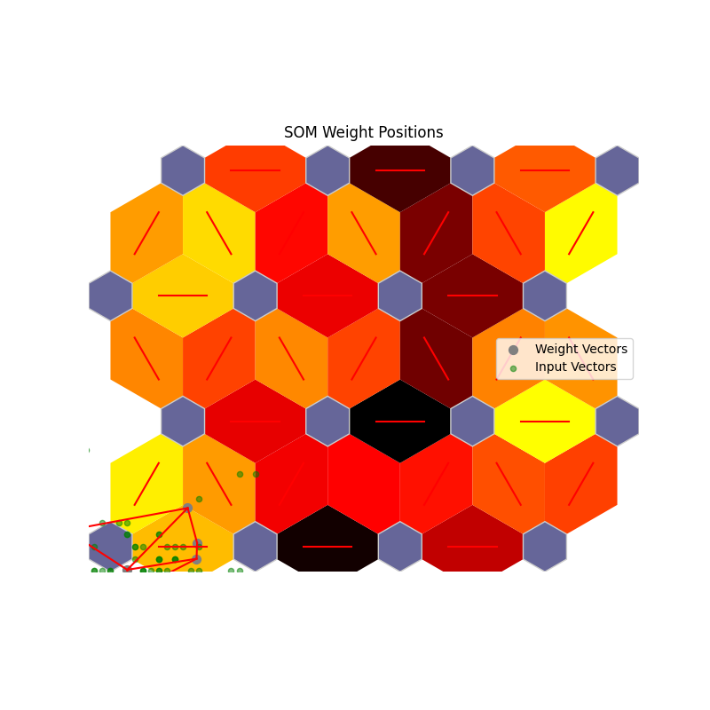
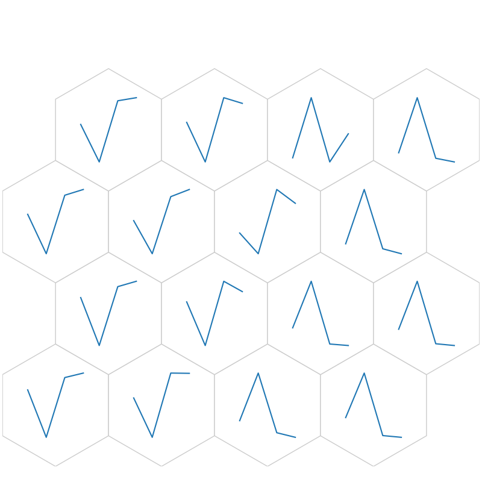
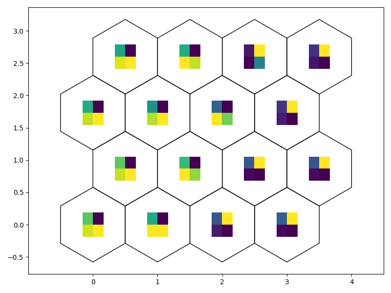

Iris training example#
Note
Go to the end to download the full example code
This script demonstrates training the Iris dataset using matplotlib.
- 
- 
- 
- 
- 
- 
- 
Beginning Initialization
Current Time = 11:22:15
Ending Initialization
Current Time = 11:22:15
Beginning Training
Current Time = 11:22:15
50
Current Time = 11:22:15
100
Current Time = 11:22:15
150
Current Time = 11:22:15
200
Current Time = 11:22:15
250
Current Time = 11:22:15
300
Current Time = 11:22:15
350
Current Time = 11:22:15
400
Current Time = 11:22:15
450
Current Time = 11:22:15
500
Current Time = 11:22:15
Ending Training
Current Time = 11:22:15
Quantization error: 0.23905968431429797
Topological Error (1st neighbor) = 15.333333333333334%
Topological Error (1st and 2nd neighbor) = 0.0%
Distortion (d=1) = 1.4056896226214228
Distortion (d=2) = 2.1270973756204903
Distortion (d=3) = 2.0118838056150357
# Importing Library
from NNSOM.plots import SOMPlots
import numpy as np
import matplotlib.pyplot as plt
from numpy.random import default_rng
from sklearn.datasets import load_iris
from sklearn.preprocessing import MinMaxScaler
import os
# SOM Parameters
SOM_Row_Num = 4 # The number of row used for the SOM grid.
Dimensions = (SOM_Row_Num, SOM_Row_Num) # The dimensions of the SOM grid.
# Training Parameters
Epochs = 500
Steps = 100
Init_neighborhood = 3
# Random State
SEED = 1234567
rng = default_rng(SEED)
# Data Preparation
iris = load_iris()
X = iris.data
y = iris.target
# Preprocessing data
X = X[rng.permutation(len(X))]
y = y[rng.permutation(len(X))]
# Define the normalize funciton
scaler = MinMaxScaler(feature_range=(-1, 1))
# Training
som = SOMPlots(Dimensions)
som.init_w(X, norm_func=scaler.fit_transform)
som.train(X, Init_neighborhood, Epochs, Steps, norm_func=scaler.fit_transform)
# Define the directory path for saving the model outside the repository
model_dir = os.path.abspath(os.path.join(os.getcwd(), "..", "..", "..", "..", "Model"))
# Create the directory if it doesn't exist
if not os.path.exists(model_dir):
os.makedirs(model_dir)
Trained_SOM_File = "SOM_Model_iris_Epoch_" + str(Epochs) + '_Seed_' + str(SEED) + '_Size_' + str(SOM_Row_Num) + '.pkl'
# Save the model
som.save_pickle(Trained_SOM_File, model_dir + os.sep)
# Extract Cluster details
clust, dist, mdist, clustSize = som.cluster_data(X)
# Find quantization error
quant_err = som.quantization_error(dist)
print('Quantization error: ' + str(quant_err))
# Find topological error
top_error_1, top_error_1_2 = som.topological_error(X)
print('Topological Error (1st neighbor) = ' + str(top_error_1) + '%')
print('Topological Error (1st and 2nd neighbor) = ' + str(top_error_1_2) + '%')
# Find Distortion Error
som.distortion_error(X)
# Visualization
# Data Preparation
data_dict = {
"data": X,
"target": y,
"clust": clust,
}
# SOM Topology
fig1, ax1, patches1 = som.plot('top')
plt.show()
# SOM Topology with neruon numbers
fig2, ax2, pathces2, text2 = som.plot('top_num')
plt.show()
# Hit Histogram
fig3, ax3, patches3, text3 = som.plot('hit_hist', data_dict)
plt.show()
# Neighborhood Connection Map
fig4, ax4, patches4 = som.plot('neuron_connection')
plt.show()
# Distance Map
fig5, ax5, patches5 = som.plot('neuron_dist')
plt.show()
# Weight Position Plot
som.plot('component_positions', data_dict)
# Weight as Line
fig6, ax6, h_axes6 = som.plot('wgts')
plt.show()
# Weight as Image
fig7, ax7, patches7 = som.weight_as_image()
plt.show()
Total running time of the script: (0 minutes 12.360 seconds)